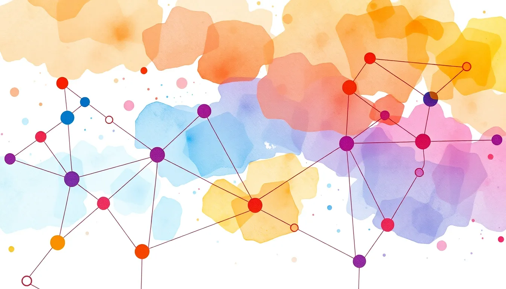
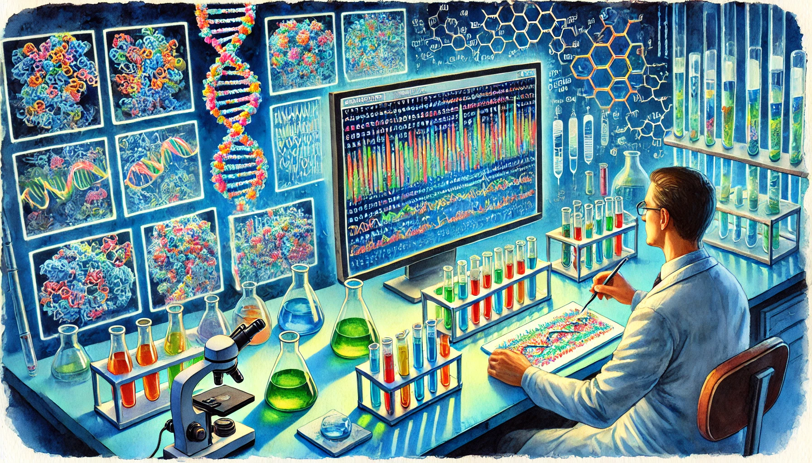
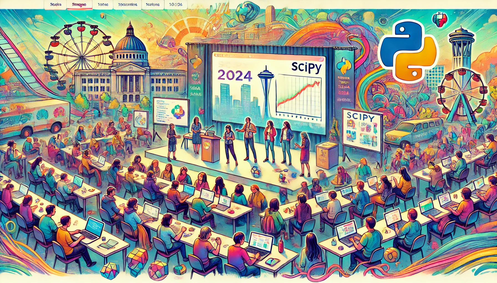
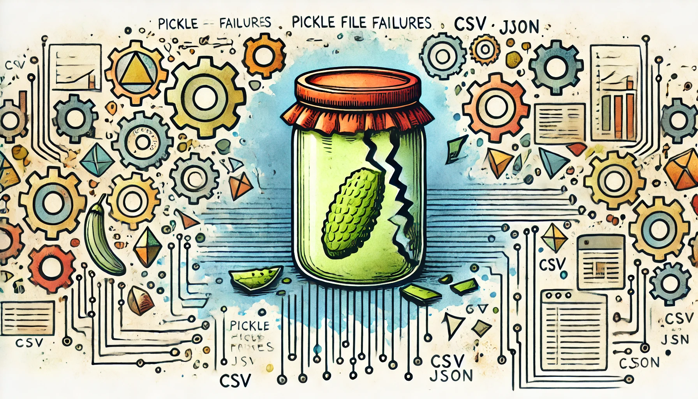

written by Eric J. Ma on 2024-09-06 | tags: evaluations pytest documentation automation testing validation changes criteria staleness
In this blog post, I explore the process of writing evaluations for LLM systems using pytest, aiming to move beyond subjective assessments to more structured testing. I detail the creation of specific tests to assess if LLMs can accurately determine documentation staleness, using various models and criteria. The challenges and insights gained from setting up these evaluations reveal the complexities involved in ensuring that LLMs perform as expected. Could this method enhance the reliability of your LLM evaluations?
Read on... (1769 words, approximately 9 minutes reading time)written by Eric J. Ma on 2024-08-31 | tags: structured generation llamabot python documentation llm pydantic software development testing structuredbot technology
In this blog post, I discuss the latest updates to LlamaBot, particularly focusing on the StructuredBot feature introduced by Elliot Salisbury. StructuredBot leverages JSON mode of LLMs for structured outputs, significantly simplifying the process of generating reliable and type-safe outputs without manual string parsing. I illustrate its application in an automated documentation checker and writer, enhancing productivity by integrating LLM-based and traditional programming methods. Curious about how StructuredBot can streamline your documentation process?
Read on... (1322 words, approximately 7 minutes reading time)written by Eric J. Ma on 2024-08-25 | tags: esm3 neural network multi-modality model training data tokenization model architecture vector embedding machine learning protein modeling journal club
In this blog post, I explore the ESM3 model, focusing on its handling of missing modalities in multi-modality training. I dissect the model's architecture, input and output configurations, and the strategic use of default values for absent data. By examining the source code and conducting a toy example, I illustrate how embeddings are calculated and how they shift in vector space when modalities are missing. This deep dive reveals the model's elegant design and its potential for multi-modality integration. Has this piqued your curiosity yet?
Read on... (2286 words, approximately 12 minutes reading time)written by Eric J. Ma on 2024-08-16 | tags: pixi tooling software development data science environment management containerization gpu packaging docker reproducibility testing
Post SciPy 2024, I had a chance to try out `pixi`, a new environment manager from the prefix.dev team. I went cold turkey on my laptop, removing `~/anaconda`, and haven't looked back. In this (very long) blog post, I detail my experience switching from `mamba` to `pixi`, the ways that `pixi` makes it easier to manage environments, how `pixi` helps with onboarding onto a project, supports containerization, GPU access, and seamless integration with Docker, and how it facilitates publishing to PyPI and running tests. The switch has streamlined my workflow significantly. Was this enough to get you curious about how `pixi` can optimize your development process too?
Read on... (5620 words, approximately 29 minutes reading time)written by Eric J. Ma on 2024-08-09 | tags: protein engineering language models sequence generation bioinformatics protein sequence evals protein structure computational biology machine learning
In part 3 of the series on protein language models, I explore the critical phase of evaluating protein sequences generated by language models, emphasizing the importance of practical, bioinformatics-based evals to narrow down candidates for lab testing. I explore both sequence-based and structure-based evals, highlighting their roles in filtering and ranking sequences to prioritize for experimental validation. Additionally, I offer insights on fostering collaboration between computational and laboratory teams to enhance protein design efforts. How can these evals and collaborations accelerate protein engineering?
Read on... (1977 words, approximately 10 minutes reading time)written by Eric J. Ma on 2024-08-02 | tags: protein modeling machine learning bioinformatics data science protein engineering autoregressive training masked language modeling
In part 2 of my three-part series on PLMs in protein engineering, I do a deep dive into the training methods of protein language models, specifically focusing on masked language modeling and autoregressive training. I explain how these models are trained, highlighting the complexities and considerations involved in training, such as model choice, masking fraction, and the need for curated training sets. With these insights, I aim to shed light on the intricate process of preparing protein language models for protein design. Curious about how these models could revolutionize protein engineering?
Read on... (1679 words, approximately 9 minutes reading time)written by Eric J. Ma on 2024-07-26 | tags: protein engineering generative ai protein language models neural networks bioinformatics protein sequences life sciences optimization
In part 1 of a three-part series on protein language models, I do a deep dive into the fascinating world of protein language models (PLMs) for protein engineering, drawing parallels between PLMs and GenAI models like GPT-4. I explore three distinct applications: patent-breaking, prioritized deep mutational scans, and candidate expansion via natural mimicry, highlighting the goal of generating plausible protein sequences for diversification. I also touch upon the potential of PLMs for optimization, using mutational effect scores for predictive purposes. How can PLMs revolutionize protein engineering and what lies ahead in this promising field?
Read on... (1310 words, approximately 7 minutes reading time)written by Eric J. Ma on 2024-07-14 | tags: scipy2024 python data science quarto tutorial llms anywidget large datasets open source llamabot conference activities
In this blog post, I share my enriching experience at SciPy 2024, from attending insightful tutorials on Quarto, LLMs, Anywidget, and handling large datasets, to delivering talks on fostering an open-source culture and LlamaBot. I also highlight the vibrant lightning talks, the collaborative sprints, and the engaging social activities that made this conference memorable. Not to forget, the delicious Tacoma cuisine that added flavor to the whole experience. Curious to know which tutorial inspired me to recreate my talks just for fun?
Read on... (2484 words, approximately 13 minutes reading time)written by Eric J. Ma on 2024-07-02 | tags: software development data science python pickles code security pandas programming best practices version control computational notebooks dependency management software skills
In this blog post, I share a cautionary tale from my work experience about the pitfalls of using pickle files for data storage, particularly highlighting their dependency on the computing environment and specific package versions. I encountered an issue when a notebook failed to run due to a pickle file not being compatible with the updated version of pandas. This experience led me to advocate for using native formats over pickles for better stability and reproducibility, and underscored the importance of software skills like continuous testing. How can we ensure our data storage methods don't become obsolete with evolving dependencies?
Read on... (532 words, approximately 3 minutes reading time)written by Eric J. Ma on 2024-06-30 | tags: docathon documentation team productivity event planning work culture knowledge sharing writing tips collaboration project management continuous improvement
In this blog post, I reflect on two years of running quarterly docathons at work, dedicated two-day events focused on writing high-quality documentation. I discuss what docathons are, their purpose, and the simple yet effective way to organize them, emphasizing the importance of food, documentation, and optional workshops. Based on both cost and the invaluable benefits of improved documentation practices, I also discuss the significant return on investment these docathons have yielded. How can such a straightforward event substantially enhance the quality of documentation and team engagement? Read on to find out.
Read on... (2028 words, approximately 11 minutes reading time)